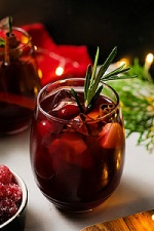

Sangria
A sangria é uma bebida feita com base numa mistura de vinho tinto ou vinho branco, sumo de fruta, pedaços de frutos e açúcar. Pode levar outras bebidas como aguardente. Deve ser bebida bem fresca, recorrendo, se necessário, a gelo. Tradicionalmente, é uma bebida associada a Portugal e Espanha, que são os únicos países em que se pode produzí-la e exportá-la de acordo com as regras da União Europeia e onde está presente desde pelo menos o início do Século XIX